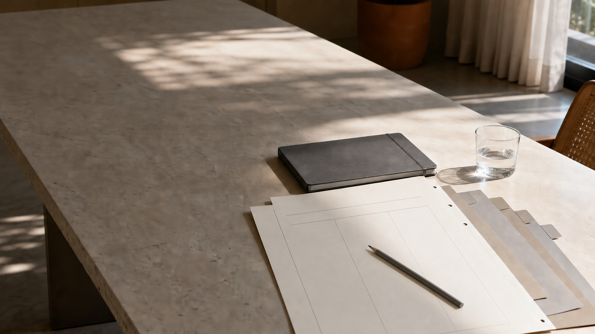

Terceirização contábil para empresas · Recife
Toda empresa tem uma conversa contábil para começar.
A RS apresenta serviços nas frentes contábil, tributária, fiscal e trabalhista. O ponto de partida desta demonstração é simples: colocar o contexto da empresa sobre a mesa.
Iniciar uma conversa
empresa / contexto
Antes de definir o escopo
O que precisa entrar nesta conversa?
Porte, segmento, necessidades e forma de acompanhamento não foram presumidos nesta proposta. São informações a compreender antes de qualquer definição de serviço.
frentes / a conversar
Quatro frentes apresentadas pela RS.
O escopo entre elas depende da conversa com cada empresa.
- 01
Contábil
- 02
Tributária
- 03
Fiscal
- 04
Trabalhista
empresa / frentes / próximo passo
O que você gostaria de colocar sobre a mesa?
Uma simulação de contato para visualizar a experiência. Nenhuma informação preenchida aqui será enviada.